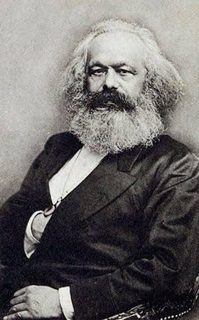
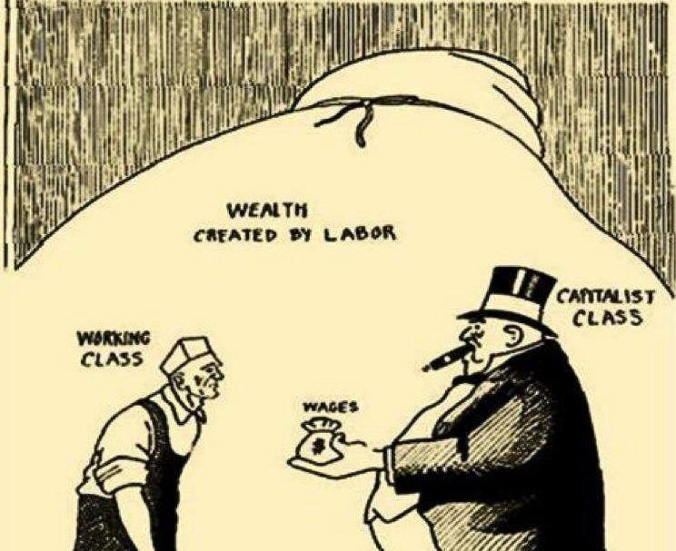
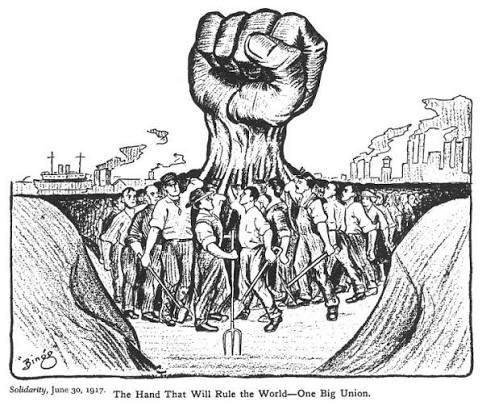
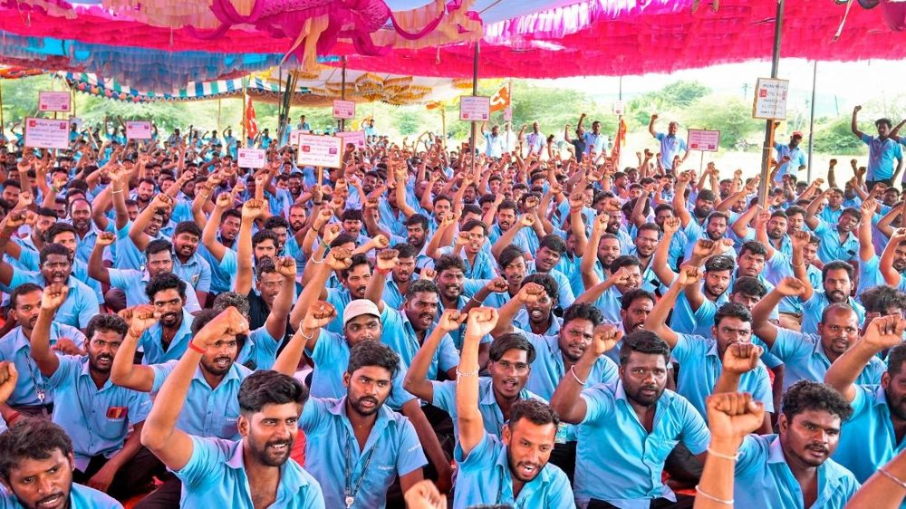
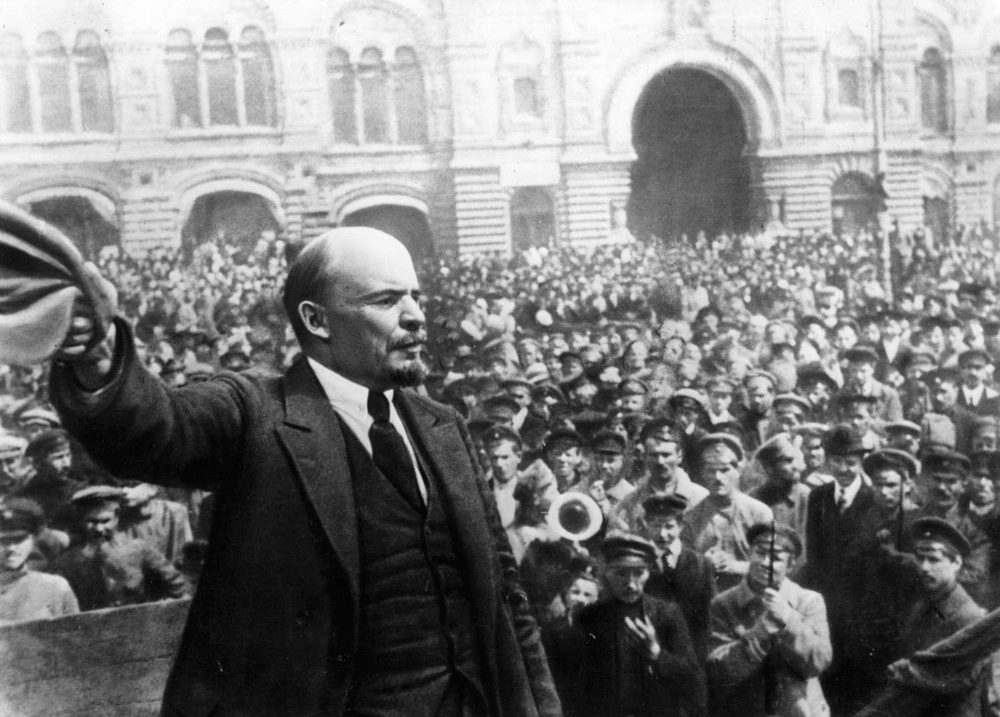
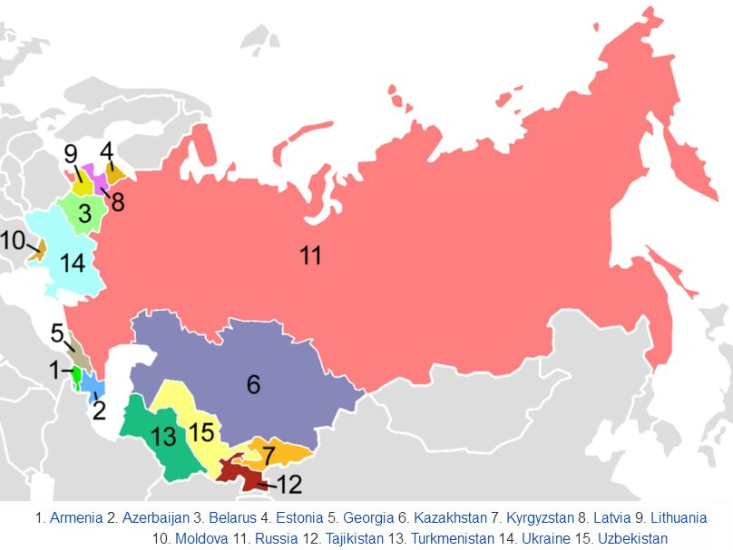

Karl MarxHigh priority
Marx explains why history moves and who pays for it. Every answer needs the base-superstructure model, the alienation types and a judgement on relevance today.
Chapter map#
- Marx
Historical materialism
- Dialectics: 3 laws
- Matter over ideas
Stages
- Primitive communism
- Slave
- Feudal
- Capitalist
- Communism
Mode of production
- Forces
- Relations
- Base
- Superstructure
Capitalism
- Bourgeoisie
- Proletariat
- Profit
- Crises
Alienation
- Product
- Process
- Fellow workers
- Self
Class struggle
- Revolution
- Communism
Criticisms
- Determinism
- Agency
- Predictions failed
Exam lens#
The story first#
In simple words#
- Marx says material production, not ideas, moves history (historical or dialectical materialism).
- History has five stages; each has a mode of production (productive forces + relations of production), with the economy as base and law, religion and state as superstructure.
- Under capitalism the worker is alienated (product, process, fellow workers, self) and class struggle between bourgeoisie and proletariat drives change towards communism.
- Critics: economic determinism, ignores caste, patriarchy and agency, failed predictions, Soviet collapse. Defenders: rising inequality and the gig economy show his relevance.
| Term | In plain words |
|---|---|
| Historical materialism | Material conditions of production drive social change; also called dialectical materialism. |
| Productive forces | Means of production (tools, machines, resources) plus labour power. |
| Relations of production | The social relations that arise in production, such as owner and worker. |
| Base | The economy: forces and relations of production. |
| Superstructure | Family, law, religion, education, culture, media, state and politics. |
| Bourgeoisie | Owners of the means of production in capitalism. |
| Proletariat | Workers who sell their labour power for wages. |
| Alienation | The worker's estrangement from product, production process, fellow workers and self. |
| Commodity fetishism | Social relations appear as relations between things; Lukacs builds reification on it. |
| Pauperisation | Growing impoverishment of the proletariat relative to the bourgeoisie. |
| Petite bourgeoisie | Small traders and independent producers who sink into the proletariat. |
1 · Karl Marx#


- Karl Marx (1818-1883) was a German philosopher whose ideas profoundly shaped modern sociology, political theory, and economic thought.
- His writings, including The Communist Manifesto and Das Capital, fundamentally changed how scholars study society, economy, history, inequality and power.
- Karl Marx (1818-1883) is one of the most influential figures in modern times
2 · Historical Materialism#
- Marx, originally part of the Young Hegelian group, was influenced by Hegel but also critically rejected many of his ideas, famously stating that he "put Hegel on his head." Marx replaced Hegel’s philosophical idealism with materialism, arguing that material conditions - not abstract ideas - are foundational in shaping human society and consciousness.
- Marx rejected the idea that ideas are the drivers of history.
- According to him,material reality is primary, and ideas are secondary, shaped by the material conditions of existence.
- In simple terms, human beings must first secure their material survival, and only then engage in other forms of social, cultural, or intellectual life.
- The production of material goods is the primary historical act.
- Historical materialism focuses primarily on economic factors, arguing that material conditions drive historical change.
- As the system of production evolves, the rest of society - its institutions, values, culture, and politics - changes with it.
- Thus, “it is not the consciousness of man that determines his being, but his social being that determines his consciousness.” Marx traced the transformation of society across historical epochs and linked changes in economy to transformation in wider society.
- Marx did not reject Hegel’s dialectical method; instead, he applied it to material reality, rather than ideas.
- Hence his theory is called dialectical materialism or historical materialism.
- Engels later summarised the operation of dialectics in three basic laws.
3 · Laws of Dialectics (as outlined by Engels)#
- 1. Law of unity and conflict of opposites: Every stage of society contains opposing forces or contradictions, and these conflicts drive change.
- 2. Law of passage of quantitative change into qualitative change: Gradual quantitative changes eventually reach a tipping point, resulting in a sudden, qualitative transformation.
- 3. Law of negation of negation: Every society is replaced by a new social organization, which in turn is superseded, producing progress through successive transformations.
- Marx applied the dialectical method to the material world, emphasising that history progresses through contradictions in economic structure and their eventual resolution.
- Marx elaborated historical materialism in works such as A Contribution to the Critique of Political Economy.
- The theory explains social transformation through changes in the system of production.
- It is called historical because Marx traced the evolution of human society from one stage to another over time, and materialist because it interprets social change in terms of material/economic conditions.
- Human history is viewed as progressive, driven by improvements in production technology which alter the economy and subsequently transform social structure.
- Marx and Engels considered their theory scientific, grounded in the empirical study of material conditions.
- They argued that the economy forms the base of society.
- As the economy evolves, changes occur in other spheres of social life.
- Thus, the development of productive forces propels transformation in society as a whole.
4 · Stages of Human History According to Marx#
- 1. Primitive Communism: Characterised by rudimentary technology, hunting-and-gathering, minimal surplus, and no private property.
- Society is egalitarian and organised around communal subsistence.
- 2. Ancient Slave Society: With the development of agriculture, surplus appears, leading to private property, class division, and slavery.
- Society is divided into masters (haves) and slaves (have-nots).
- 3. Feudal Society: Technological improvement leads to greater agricultural production.
- Society is divided into feudal lords (haves) and serfs (have-nots).
- 4. Capitalist Society: Marked by industrialisation, mechanised production, and large surplus production.
- Society is divided into bourgeoisie (owners) and proletariat (workers).
- 5. Communism: A classless, egalitarian society characterised by advanced technology, collective ownership of resources, abolition of private property, and elimination of exploitation.
- Human needs are met, and social harmony prevails.
- The relationship between the haves and have-nots is one of antagonistic cooperation - mutual dependence combined with conflict of interests.
- In all class societies, the central conflict is between those who own the means of production and those who do not, and history advances through struggle between these classes.
- Historical materialism offers a scientific explanation of social change rooted in economic forces.
- Marx argued that changes in the mode of production transform the economy, leading to shifts in social structure, culture, and institutions.
- Human history, therefore, is the story of developing productive forces, successive class conflicts, and movement towards a classless society.
- Marx’s theory remains influential because it established a powerful framework for understanding history, power, inequality, and social transformation.
5 · Mode of Production#
- In Marxian theory, the mode of production refers to the specific way in which the production and distribution of goods are organised in a society.
- It reflects both the material conditions under which people produce and the social relations that emerge from this process.
- Each historical epoch is characterised by a distinct mode of production, such as the ancient slave mode, feudal mode, and capitalist mode of production.
- Marx argued that understanding any society requires understanding its mode of production because it shapes not only economic life but also social relations, institutions, and culture.
- Every mode of production is defined by its productive forces.
- These refer to all the inputs involved in the process of production.
- Marx divides them into two components:
- 1. Means of Production: These are all inputs other than labour power used in production - tools, machines, technology, natural resources, factories, raw materials, land, etc. 2.
- Labour Power: This refers to the human capacity to work - skills, physical strength, knowledge, and creativity.
- Thus, forces of production = means of production + labour power.
- As productive forces develop over time - through technological progress, better tools, changing skills
- - the mode of production itself evolves.
- Marx emphasised that production is a social enterprise.
- Human beings cannot produce in isolation; they must enter into specific social relationships in order to organise and carry out production.
- These are known as the relations of production.
- Relations of production include:
- The relationships between people involved in production (e.g., master-slave, lord-serf, capitalist-worker), and
- The relationships between people and the productive forces (i.e., who controls the means of production, who owns resources, who works with them).
- These relations determine patterns of ownership, control, responsibility, and the distribution of surplus.
- For Marx, class structure arises directly from the relations of production.
- Every mode of production consists of two interrelated components:
- 1. Base (Infrastructure): The economy - i.e., the organisation of production, distribution, class relations, forces and relations of production - forms the foundation of society.
- 2. Superstructure:All non-economic institutions and practices - family, law, religion, education, culture, media, state and politics - constitute the superstructure.
- According to Marx, the relationship between base and superstructure is twofold:
- 1. Base shapes the superstructure: Changes in the economic base (e.g., new technologies, new class relations) lead to changes in social, political and cultural life.
- For instance, industrial capitalism gave rise to modern factories, bureaucratic states, individualism, new legal systems, and new family structures.
- 2. Superstructure stabilises and legitimises the base: Institutions in the superstructure promote ideas and norms that justify and maintain existing economic arrangements.
- For example, religion encourages acceptance of inequality and suffering - leading Marx to call religion the “opium of the masses.” Similarly, education justifies class differences and helps maintain the status quo.
- Thus, the superstructure both emerges from and reinforces the economic base.
- Marx identified several historical modes of production which succeed one another, each corresponding to specific productive forces and relations of production: Primitive Communal Mode (egalitarian, no private property)
- Ancient Slave Mode (masters and slaves)
- Feudal Mode (lords and serfs)
- Capitalist Mode of Production (bourgeoisie and proletariat)
- Communist Mode (egalitarian) The concept of mode of production is central to Marx’s understanding of society.
- It highlights how material production forms the foundation of social life, how economic structures shape social institutions, and how changes in productive forces lead to broader social transformations.
- By examining forces of production, relations of production, and the base-superstructure relationship, Marx provides a comprehensive framework for explaining historical change and the dynamics of class society.
6 · Capitalist Mode of Production#


- The capitalist mode of production is the dominant economic system analyzed by Karl Marx in Das Kapital(1867).
- Marx examines capitalism as an economic arrangement and a historical stage defined by a specific combination of productive forces and relations of production.
- Capitalism, in Marx’s view, marks a stage where production is highly developed, markets are fully expanded, and society is divided into antagonistic yet interdependent classes.
- Marx considered capitalism both dynamic and deeply exploitative, driven by contradictions inherent in its class structure.
- Marx considered capitalism as being characterized by exploitation of workers by capitalists Main Features of the Capitalist Mode of Production:
- 1. Salience of Capital In capitalism, capital becomes the most important productive force and is best understood as money invested in economic activity with the intention of generating additional money, so that production is directed towards the expansion of capital rather than the satisfaction of human needs.
- 2. Antagonistic Classes Capitalism is characterized by two major social classes - the bourgeoisie and the proletariat - whose relationship is one of antagonistic cooperation, since while both depend on each other for production, their class interests are mutually incompatible.
- The dependence is unequal as workers rely on capitalists for survival whereas capitalists rely on workers for profit, resulting in an exploitative oppressor-oppressed relationship. 3.
- Circuit of Capital The capitalist economy operates through the circuit M → C → M′ where money is advanced to purchase commodities which are then sold to obtain more money than what was originally invested, making the expansion of money the primary aim of production and defining the essential logic of capitalism.
- 4. Market-Centric Economy All production in the capitalist mode takes place primarily for exchange in the market, with every input procured through the market and every output directed back into it, thereby making the market the central mechanism coordinating economic life and assigning value to goods, labour, and resources.
- 5. Free Workers The workers in capitalist society are legally free individuals who can sell their labour power in the labour market for wages.
- However, this freedom is largely formal because lacking control over the means of production they are compelled to work for wages in order to survive.
- 6. Private Ownership The means of production in capitalism are privately owned by the bourgeoisie, and this private ownership enables the capitalist class to control the labour process, direct production, appropriate surplus value, and maintain structural dominance over the working class.
- 7. Universal Commodification Capitalism extends monetary valuation to almost all aspects of life and turns goods, services, time, skills, and even forms of human activity into commodities that can be bought and sold, thereby creating a society where nearly everything is available through the market.
- 8. Profit as the Driving Force The principal motive behind capitalist production is the maximization of profit, which Marx explains as arising from the appropriation of surplus value produced by workers, because while labour generates all value, capital appropriates a part of this value without equivalent compensation.
- A newspaper cartoon depicting the appropriation of labour by capitalists For Marx, profit represents the surplus value of labour appropriated by the capitalists; since capital contributes no value of its own, which makes the extraction of surplus labour a structurally exploitative process.
- 9. Relentless Competition Capitalists operate in a fiercely competitive environment.
- To survive in the market, each capitalist must constantly adopt new machinery, improve productivity, reduce labour costs, and reconfigure the labour process.
- The cut-throat competition compels every capitalist to revolutionise the means of production, making technological advancement continuous, rapid, and often disruptive.
- 10. Periodic crises Capitalism is inherently unstable and experiences periodic cyclic crises because goods are produced for profit rather than need, leading to mismatches between production and consumption and resulting in recessions, unemployment, and economic downturns.
- 11. Alienation Capitalism leads to the alienation of the worker as under conditions of wage labour, the worker experiences a deep sense of powerlessness and dissatisfaction.
- The capitalist mode of production, as described by Marx and Engels, is simultaneously the most productive and the most exploitative economic system in human history, marked by private ownership, wage labour, market dependence, class antagonism, surplus extraction, and alienation.
- While it unleashes extraordinary technological and productive capacities, it also generates crises, inequalities, and contradictions that Marx believed would ultimately undermine it.
7 · Alienation#
- Alienation is a central concept in Karl Marx’s theory of work and is elaborated most clearly in his Economic and Philosophic Manuscripts of 1844.
- Marx contends that the worker in capitalist society does not feel content and remains unhappy at work, because labour is not an expression of his essential being but an activity performed under compulsion.
- Work in capitalism drains the worker of energy, fragments his physical and mental capacities, and becomes a source of misery rather than self-expression.
- Alienation literally comes from the Latin word alienus, meaning “stranger,” and it refers to the worker’s estrangement from his work and the work environment.
- Marx says the worker “only feels himself outside his work, and in his work feels outside himself; at home when he is not working, and when he is working he is not at home.” At work, the worker is miserable and drains his body and mind.
- Alienation arises because the worker has no control over the production process, no ownership of the product, and no freedom of creative expression.
- His labour becomes a commodity that is bought and sold on the market like any other object, reducing his humanity to an economic unit of exchange.
- For the worker, then, labour is an exhausting and degrading activity.
- Alienation: Factory workers in capitalism are over-worked, exhausted, and dissatisfied Marx identifies four dimensions of alienation in capitalist society: 1.Alienation from the product In capitalism, the worker is estranged from the product of his labour; which is owned and appropriated by the capitalist rather than the worker who created them.
- The product stands before him as something “foreign” or “strange.” Moreover, due to intense specialization, each worker contributes only a fragment of the final good, making it impossible for him to recognise himself in the product.
- He neither owns it nor identifies with it, and therefore the product becomes an external force that confronts the worker rather than an expression of his creativity.
- 2.Alienation from the production process The worker is also alienated from the act of production itself.
- The entire process - its pace, techniques, tools, technologies, and division of tasks - is rigidly controlled by the capitalist.
- The worker has no say in organising work, setting objectives, or deciding how production should proceed.
- Labour is reduced to mechanically following instructions.
- Since work is not chosen, directed, or shaped by the worker, the production process becomes an oppressive force rather than a fulfilling human activity.
- 3.Alienation from fellow workers and society Capitalism divides workers through hierarchies such as skilled, semi-skilled, and unskilled categories, and through competitive labour markets that pit individuals against one another.
- As a result, workers do not see each other as members of a collective class but as competitors, rivals, superiors, or subordinates.
- Social relationships become transactional and mediated by money, limiting the development of deep, meaningful human bonds.
- Human beings interact with each other as economic units rather than full persons, preventing solidarity, cooperation, and connection.
- 4.Alienation from self According to Marx, to labour and the conscious transformation of nature is the ‘species essence’ of human beings.
- Work has the potential to be the most fulfilling of all human activities, expressing creativity, individuality, and human potential.
- However, in capitalism the worker is estranged from his own essence because his labour becomes a forced, external, and demeaning activity.
- Since he cannot identify with either the product or the process, work becomes mere drudgery done for survival, not an expression of his human capacities.
- The worker therefore becomes alienated from himself - his creativity, his individuality, and his humanity.
- Alienation reaches its peak in capitalist society, where labour is commodified, production is controlled by capitalists, and workers are reduced to instruments of profit maximisation.
- The notion of alienation together demonstrate how capitalism fragments human personality, distorts social relations, and prevents individuals from realising their creative and human potential.
- Marx believed that overcoming capitalist production relations would eliminate alienation and restore labour as a fulfilling, creative, and humanising activity.
- Related Concepts: Commodity fetishism is a concept developed by Karl Marx in Capital, Volume I.It means that under capitalism, social relations between people take the form of relations between things.
- In a capitalist market,commodities appear to possess value in themselves, as if value naturally arises from the object, rather than from the human labour that produced it.
- This leads people to focus on commodities and prices while overlooking the social processes and power relations behind their production.
- Marx argued that labour is the real source of value, but in capitalism this labour becomes invisible.
- Workers sell their labour power for wages, and the products of their labour confront them as independent objects with market prices.
- As a result, exploitation is concealed, and relations between workers and capitalists appear as simple, equal exchanges in the market.
- Social relations are thus reduced to monetary transactions between commodities.
- Marx used the term “fetishism” by drawing an analogy with religion.
- Just as religious objects are believed to have supernatural powers created by humans themselves,commodities are believed to have value and power independent of human labour.
- People forget that they themselves created these commodities and the value attached to them.
- Through commodity fetishism, capitalism produces false consciousness.
- Inequality, domination, and exploitation appear as natural outcomes of the market rather than as products of specific social relations.
- People begin to judge one another by what they own rather than by their human qualities, and consumption becomes central to social status and identity.
- Reification refers to the process by which social relations, human activities, and abstract ideas come to be perceived as things - fixed, objective, and independent of human agency.
- The Marxist concept is developed by Georg Lukacs in History and Class Consciousness.
- Reification literally means “thing-ification.” In capitalist society, reification occurs when relationships between people take the form of relationships between objects.
- Human labour, creativity, and social cooperation appear as properties of commodities, money, or institutions rather than as outcomes of human action.
- So, people begin to experience society as something that dominates them rather than something they actively create.
- The concept of reification builds upon Marx’s idea of commodity fetishism.
- Reification extends its logic beyond commodities to institutions like the state, bureaucracy, law, and even time and labour, which are treated as measurable, calculable things rather than lived human experiences.
- Lukacs argued that under capitalism, fragment human activity is fragmented into isolated tasks.
- Workers are reduced to mechanical functions, and their labour becomes an object governed by external rules.
- This leads to alienation, loss of creativity, and a diminished sense of human freedom.
- People come to accept existing social arrangements as inevitable and immutable.
- Inequality, exploitation, and domination appear as technical or administrative necessities rather than as social choices.
- In essence, reification explains how capitalism transforms dynamic human relations into rigid, object-like structures.
- It is a key concept in Marxist social theory for understanding alienation, domination, and the loss of human agency in modern society.
8 · Class Struggle#


- Marx places class struggle at the centre of human history .
- In The Communist Manifesto (1848), co-authored with Friedrich Engels, Marx famously asserts that “the history of all hitherto existing societies is the history of class struggles.” In every historical epoch, society is divided into two antagonistic classes - the haves, who control the means of production, and the have-nots , who are dispossessed and exploited.
- This fundamental conflict of interest renders every social order inherently unstable.
- Within each mode of production,new productive forces gradually develop inside the womb of the old social structure.
- These emerging forces continue to grow and refine themselves within the old framework for as long as that framework can accommodate them.
- However, a stage eventually arrives when these productive forces can no longer expand under the existing relations of production.
- At that point, the old relations start to act as fetters on further development, blocking the progress of the new system taking shape.
- It is at this historical juncture that a decisive class struggle breaks out.
- The rising class - whose interests are aligned with the new productive forces - confronts the entrenched ruling minority.
- They mobilise the have-nots, challenge the legitimacy of the old order, and overthrow the existing arrangements.
- Through this decisive struggle, the old mode of production is dismantled and a new one emerges in its place.
- As illustration, consider the transition from feudalism to capitalism.
- Elements of capitalist production
- - such as merchant capital, and early manufacturing in embryonic factories using new technologies - first emerged within a broadly feudal society.
- These new productive forces continued to develop gradually inside the feudal structure.
- But with time, feudal relations of production - based on serfdom, hereditary privilege, and rigid hierarchy - began to restrict the further expansion of capitalist forces.
- At that critical point, a decisive class struggle unfolded between the rising bourgeoisie and the declining feudal lords.
- The bourgeoisie mobilised the dispossessed classes, challenged the political dominance of feudal lords, and eventually replaced feudalism with capitalism, inaugurating a new (capitalist) mode of production.
- Marx views class struggle not as a peripheral phenomenon but as the driving force of historical change.
- Each mode of production contains internal contradictions that eventually give rise to a new class, a new struggle, and ultimately a new social order.
- The next logical step in this framework is to examine how capitalism itself contains the seeds of its transformation into communism.
9 · Transformation from Capitalism to Communism#
- Marx argues that the destruction of capitalism and its transformation into communism is not a moral ideal or a political dream , but a scientific prediction based on the objective contradictions inherent in capitalist society.
- In Das Kapital, Marx contends that capitalism contains within itself the forces that will inevitably lead to its collapse.
- Marx predicted that workers will unite and overthrow capitalism The two major classes, the bourgeoisie and the proletariat, have fundamental conflicts of interest that cannot be resolved within the capitalist framework.
- Alongside this, several social and economic processes unfold within capitalism that intensify class conflict and push society toward its revolutionary transition, as follows:
- 1. De-skilling With continual technological advancement, production becomes increasingly mechanised and simplified.
- The skills earlier required for different occupations are gradually removed, leaving workers performing routine, fragmented tasks.
- This process ultimately homogenises the working class, making workers more similar in their objective conditions of life.
- As differentiation among workers decreases, their capacity for collective organisation and shared identity increases.
- 2. Petite bourgeoisie will sink into the proletariat Small traders, merchants, and independent producers - the petite bourgeoisie - cannot withstand competition from large capitalist enterprises.
- As big capital expands, these small property-holders steadily lose their businesses and are pushed downward into wage labour.
- The petite bourgeoisie historically had a stabilising effect on capitalist society because they embodied traits of both classes.
- As this intermediate group disappears, class divisions become sharper and the conflict between bourgeoisie and proletariat becomes more stark.
- 3. Concentration of workers in large-scale production units As industries grow, more and more workers are gathered together in large factories and enterprises.
- This physical concentration facilitates communication, fosters shared experiences, and nurtures a growing sense of common identity.
- When thousands of workers labour under the same roof, facing identical exploitation, the conditions become ideal for the development of collective consciousness and organisation.
- 4. Pauperisation of the proletariat Marx argues that the proletariat becomes increasingly impoverished relative to the bourgeoisie as capitalism advances.
- The gap between labour and capital widens sharply, leading to intensified deprivation, insecurity, and exploitation.
- Wealth becomes increasingly concentrated in a small minority of capitalists, while the working-class becomes relatively worse off.
- This pauperisation magnifies class discontent and strengthens revolutionary tendencies.
- As these processes unfold, class polarization takes place, with class identities and antagonisms becoming sharp and clear.
- The two major classes grow more distinct, with an unbridgeable gulf emerging between the haves and the have-nots, the oppressors and the oppressed.
- The proletariat, initially a class in itself (a class defined merely by its objective position as non-owners of capital), gradually becomes a class for itself, meaning that workers develop true class consciousness.
- To clarify, false class consciousness is the worker’s mistaken belief that his interests align with the bourgeoisie or that existing inequalities are natural or just; this is eventually replaced by true class consciousness, in which workers recognise their shared interests and common enemy.
- Once the proletariat becomes a class for itself, it is capable of coordinated revolutionary action.
- The stage is now set for a bloody proletariat revolution.
- According to Marx, this revolutionary transition differs fundamentally from earlier class struggles.
- Historically, class struggles took place between two minorities: one entrenched ruling minority and one rising minority that would become the next ruling class.
- But the struggle between capitalists and workers is between a ruling minority and a ruled majority.
- And unlike previous transitions, which merely replaced one class society with another, the proletarian revolution aims to abolish class distinctions altogether and inaugurate a classless, communist society.
- The proletarian revolution, according to Marx, is followed by a transitional phase known as the dictatorship of the proletariat, also called the socialist stage.
- This is not a dictatorship in the conventional sense of autocratic rule; rather, it refers to the political supremacy of the working class.
- In Critique of the Gotha Programme (1875), Marx contends that during this phase, the proletariat capture the state apparatus and takes control of the productive forces through its vanguard.
- The central task of this stage is to eliminate all remnants of capitalism, both in the economy and in the superstructure.
- The institutions, laws, norms, ideologies, and political structures that legitimised capitalist exploitation are systematically dismantled so that the old society does not reassert itself.
- The dictatorship of the proletariat therefore acts as the instrument through which the last traces of capitalist relations are uprooted.
- Once these vestiges are destroyed and class antagonisms disappear, society transitions to the final stage of human history - communist society.
- In communism, all productive resources are collectively owned by the entire community.
- In his various works, such as Critique of the Gotha Programme(1875), and The Communist Manifesto(1848), Marx outlines a broad outline of the communist society.
- It is a genuinely classless society, free from distinctions of wealth, status, or power.
- Inequalities rooted in private property no longer exist because private ownership of the means of production has been completely abolished.
- Communism is marked by highly advanced technology , abundant production, and the end of material scarcity.
- Production and distribution operate according to Marx’s celebrated principle:“From each according to his ability, to each according to his needs.” In communist society, alienation disappears because work ceases to be a forced, externalised activity and becomes a free, creative expression of human essence.
- The state withers away, as its historical role was to legitimize and uphold the interests of the ruling class, and it no longer has any function in a classless society.
- Religion also ceases to exist because, as per Marx, it is rooted in conditions of alienation and exploitation that no longer exist.
- Human relations become genuinely cooperative, non-hierarchical, and fulfilling.
- Individuals are no longer confined to narrow occupational specialisations; instead, they contribute their labour freely to the community and develop their full humanity, creativity, and individuality.
- Marx envisages communism as the culmination of human history, the stage at which the contradictions of previous societies are finally resolved and history comes to an end.
10 · Marxism – A Critical Analysis#






- Karl Marx remains one of the most influential and debated thinkers in social science.
- His ideas on class, capitalism, and social change have shaped modern sociology, economics, and political movements.
- At the same time, Marx’s theories have attracted strong criticism for their assumptions, predictions, and implications.
- An internet meme making fun of Marxism Criticisms of Marxism 1.
- Marxism is economically deterministic, as it reduces various aspects of social life - law, politics, religion, and culture - to underlying economic base.
- 2. The theory overemphasizes conflict, portraying history as a class struggle and ignoring cooperation, consensus, and interdependence in society.
- 3. Marx's claim of universality is criticized, since his historical stages are based on European experiences and fail to account for the diverse trajectories of other societies.
- 4. Marxism ignores non-class forms of inequality and exploitation, such as caste, patriarchy, racial oppression, and religious discrimination.
- 5. Marx neglected individual agency, treating people as mere products of structural and historical forces, with no capacity for independent action.
- 6. Marx reduces the power of ideas and ideologies, treating them as mere reflections of material reality and failing to recognize their role in shaping social change.
- 7. The predicted proletarian revolution has not occurred, the working class has not risen up as Marx anticipated.
- 8. Capitalism has evolved into welfare capitalism, incorporating reforms, labour rights, and social security, improving workers’ lives.
- 9. Working class has become increasingly heterogeneous, divided by skill, income, and lifestyle, contrary to Marx’s view of a homogenized proletariat.
- 10.Marx assumes labor as the essence of human nature, ignoring man’s tendency towards indolence.
- Soviet Union, which came closest to implementing Marx’s ideas, disintegrated into 15 countries on 26 December 1991.
- 11.Communism is utopian and impractical, as it assumes an ideal human nature, and overlooks complexities of governance and resource distribution.
- 12.Collapse of Soviet Union and other socialist regimes indicates that the Marxist model is not viable in practice.
- 13.Marxism claims to be a scientific theory, but critics argue that its empirical base is narrow, its predictions have failed, and it lacks objectivity.
- 14.Raymond Aron criticizes Marxism as the ‘opium of the intellectuals’, arguing that many Marxist scholars have ignored or justified human rights abuses under communist regimes.
- 15.Francis Fukuyama contends in The End of History that the fall of communism marks the global triumph of liberal democracy and capitalism as the most viable political and economic system.
- Contemporary Relevance and Defence of Marxism 1.
- Global Influence Karl Marx continues to be regarded as one of the foremost thinkers of modern times.
- His writings had a profound impact on societies across the globe.
- During the Cold War, in the Eastern Bloc, a large chunk of humanity was affected by his ideology in their daily lives.
- Lenin (1870-1924) led the Bolshevik Revolution in Russia, established USSR, and affected the lives of millions 2.
- Crisis in Capitalism The impact of Marxist writings continues to be felt even after the collapse of the USSR.
- Whenever global capitalism is in crisis (most recently, during the 2009 global financial crisis), Marxist writings are revisited.
- 3. Misunderstanding Marx Many criticisms of Marxism stem from an incomplete or incorrect reading of Marx's works.
- Marx was a prolific writer, and his writings are voluminous and complex.
- A more nuanced reading of his philosophy will make redundant many of these criticisms.
- a. On Economic Determinism Marx is often accused of economic determinism - that he believes the superstructure is shaped by the base.
- However, a closer look at Marx's writings reveals that he writes the superstructure is shaped by the base "in the last instance." This means that Marx does acknowledge the role of the superstructure in social life, although ultimately the economy prevails.
- b. On Individual Agency Marx is also accused of ignoring individual agency, focusing only on wider socio-economic forces.
- However, Marx writes that history is the activity of men in pursuit of their ends.
- His call to action - “Workers of the world, unite!
- You have nothing to lose but your chains” - clearly indicates that he sees individuals not as passive but as active shapers of their own destiny.
- 4. Contemporary Relevance Many of Marx’s analyses and concepts are highly relevant today.
- Elon Musk has become the world’s first trillionaire in 2026.
- Meanwhile, 1.1 billion people (17.5 % of the world’s population) live in acute poverty.
- Marx had highlighted the growing concentration of wealth under capitalism. a.
- On Inequality Marx wrote about the increasing concentration of wealth in capitalism. o The 2018 Oxfam report showed that the 26 richest individuals held as much wealth as the bottom 50% of humanity (3.8 billion people). o The 2023 Oxfam report titledSurvival of the Richestrevealed that the richest 1% captured over two-thirds of all wealth created since 2020, while 1.7 billion workers lived in countries where inflation outpaced wages. o The 2024 Oxfam report Inequality, Inc. noted that the wealth of the five richest men doubled since 2020, while 5 billion people became poorer. o Economist Thomas Piketty, in his paperThe Rise of the Billionaire Raj, observed that the top 1% in India now hold 40% of the country's wealth and earn 22% of its income – indicating more inequality than during the British Raj.
- b. Alienation Today Marx’s concepts of worker exploitation and alienation are reflected in the modern gig economy, corporate burnout, stress, and even suicides.
- Movements of mass resignations among Western white-collar workers show their continuing relevance.
- c. State - Bourgeois Nexus Marx emphasized the close nexus between the state and the bourgeoisie, famously saying the state is but a committee to manage bourgeois interests.
- This rings true today in the form of corporate bailouts, financial incentives to big businesses, and the rise of crony capitalism.
- d. Living Legacy of Marxism Marxism remains alive in trade unionism and contemporary working-class movements worldwide.
- Left-leaning political parties like CPI and CPI(M) in India and others abroad draw heavily from Marxist thought.
- In academia, especially social sciences, Marxist analysis remains influential.
- Protests by Samsung factory workers at Sriperumbudur in Tamil Nadu (2025) e.
- Marxist ideas have also influenced a wide range of social movements, such as the 2011 Occupy Movement in the West, Naxalite movement in India, women’s movements, various peasant and tribal rebellions and environmental struggles.
- 5. Contribution to Sociology In sociology, Marxism helped balance the functional bias in early sociology.
- Early thinkers like Comte and Durkheim emphasized harmony, and interdependence.
- Marxism rectified this by highlighting conflict and exploitation as fundamental to social life.
- Taken together, the criticisms and defences of Marx show why his ideas continue to generate discussion even after more than a century.
- While some of his predictions did not unfold as he expected, many of his insights into power, inequality, exploitation, and economic instability remain relevant for understanding contemporary societies.
- A critical yet fair engagement with Marx allows students to appreciate both the limitations of his theories and their enduring analytical value.
Traps#
| Trap | What goes wrong, and the rule |
|---|---|
| Historical vs dialectical materialism | The handout uses both names for the same theory: material conditions of production drive history. Exam-hall rule: write 'dialectical materialism or historical materialism' once, then use one term. |
| Base and superstructure | The superstructure stabilises and legitimises the base, but the base shapes the superstructure. Defenders say the accusation of economic determinism misreads Marx. Exam-hall rule: say the base shapes it, and the superstructure also stabilises it. |
| Alienation vs anomie | Marx's alienation comes from capitalist production relations; Durkheim's anomie is normlessness in transition. Exam-hall rule: Marx = power and ownership; Durkheim = norms and integration. |
Recall sheet#
Read once, hide it, then rebuild the chapter from memory.
- Marx's years? 1818-1883
- Marx's group before breaking from Hegel? Young Hegelians
- Who framed the three laws of dialectics? Engels
- Name the three laws Unity and conflict of opposites; quantity into quality; negation of negation
- Five stages in order? Primitive communism, ancient slave, feudal, capitalist, communism
- Base and superstructure? Base = economy; superstructure = family, law, religion, education, culture, media, state, politics
- Das Kapital published? 1867
- Communist Manifesto published? 1848, with Engels
- Where is alienation elaborated? Economic and Philosophic Manuscripts of 1844
- Four forms of alienation? Product, production process, fellow workers and society, self
- Who developed reification? Georg Lukacs, in History and Class Consciousness
- Who called Marxism the opium of the intellectuals? Raymond Aron
- Whose book is The End of History? Francis Fukuyama
- Class struggle: the driving force of? Historical change
Abbreviation column#
| Short form | Full form | One-line meaning |
|---|---|---|
| PYQ | Previous Years' Questions | Questions UPSC has already asked |
| I/2b/20 | Paper I / Question 2b / 20 marks | How the handout labels each PYQ |
| USSR | Union of Soviet Socialist Republics | Soviet Union; its collapse is a criticism of the Marxist model |
Revise#
| Day | What to do |
|---|---|
| Day 0 | Read the Exam lens and the notes; mark the chapter done |
| Day +1 | Recall sheet: read once, hide, rebuild |
| Day +3 | Flashcards: missed ones only |
| Day +7 | Quick quiz; fix each miss against the Traps |
| Day +21 | Write two Mains answers from memory using the skeletons |
| Day +45 | Blank-page test: redraw the chapter map |
Test yourself#
Quick quiz
Flashcards
Tap the card to flip.
Mains answer skeletons
One for each Mains PYQ quoted in the handout. Tap to open; try the answer first.
2025 · 20 marks · Highlight the main features of historical materialism as propounded by Marx. How far is this theory …
Question. Highlight the main features of historical materialism as propounded by Marx. How far is this theory relevant in understanding contemporary societies? Explain.
- Intro: name Karl Marx and state the central idea in one line (see The story first).
- Body: build the answer from the notes under: Historical Materialism; Laws of Dialectics (as outlined by Engels); Stages of Human History According to Marx.
- Close: finish with the matching criticisms section and a one-line judgement.
2024 · 10 marks · Critically explain the salient features of ‘alienation’ as propounded by Karl Marx.
Question. Critically explain the salient features of ‘alienation’ as propounded by Karl Marx.
- Intro: name Karl Marx and state the central idea in one line (see The story first).
- Body: build the answer from the notes under: Alienation.
- Close: finish with the matching criticisms section and a one-line judgement.
2023 · 20 marks · What is historical materialism? Examine its relevance in understanding contemporary societies.
Question. What is historical materialism? Examine its relevance in understanding contemporary societies.
- Intro: name Karl Marx and state the central idea in one line (see The story first).
- Body: build the answer from the notes under: Historical Materialism; Laws of Dialectics (as outlined by Engels); Stages of Human History According to Marx.
- Close: finish with the matching criticisms section and a one-line judgement.
2021 · 20 marks · Critically examine the dialectics involved in each mode of production as propounded by Karl Marx.
Question. Critically examine the dialectics involved in each mode of production as propounded by Karl Marx.
- Intro: name Karl Marx and state the central idea in one line (see The story first).
- Body: build the answer from the notes under: Mode of Production; Capitalist Mode of Production; Laws of Dialectics (as outlined by Engels).
- Close: finish with the matching criticisms section and a one-line judgement.
2020 · 10 marks · Critically assess the Marxian Theory of ‘Alienation’.
Question. Critically assess the Marxian Theory of ‘Alienation’.
- Intro: name Karl Marx and state the central idea in one line (see The story first).
- Body: build the answer from the notes under: Alienation.
- Close: finish with the matching criticisms section and a one-line judgement.
2019 · 10 marks · What is the Marxist concept of ‘Fetishism of Commodities?
Question. What is the Marxist concept of ‘Fetishism of Commodities?
- Intro: name Karl Marx and state the central idea in one line (see The story first).
- Body: build the answer from the notes under: Alienation.
- Close: finish with the matching criticisms section and a one-line judgement.
2018 · 20 marks · According to Marx, how are human beings alienated from their human potential and what does he sugges…
Question. According to Marx, how are human beings alienated from their human potential and what does he suggest to change this?
- Intro: name Karl Marx and state the central idea in one line (see The story first).
- Body: use the chapter sections that match the keywords of the question.
- Close: finish with the matching criticisms section and a one-line judgement.
2017 · 20 marks · Analyse Marxian conception of historical materialism as a critique of Hegelian dialectics.
Question. Analyse Marxian conception of historical materialism as a critique of Hegelian dialectics.
- Intro: name Karl Marx and state the central idea in one line (see The story first).
- Body: build the answer from the notes under: Historical Materialism; Laws of Dialectics (as outlined by Engels); Stages of Human History According to Marx; Mode of Production.
- Close: finish with the matching criticisms section and a one-line judgement.
2016 · 10 marks · Evaluate Marx’s ideas on mode of production.
Question. Evaluate Marx’s ideas on mode of production.
- Intro: name Karl Marx and state the central idea in one line (see The story first).
- Body: build the answer from the notes under: Mode of Production; Capitalist Mode of Production.
- Close: finish with the matching criticisms section and a one-line judgement.
2014 · 10 marks · According to Marx, capitalism transforms even the personal relationship between men and women. Criti…
Question. According to Marx, capitalism transforms even the personal relationship between men and women. Critically examine with illustrations from the contemporary Indian context.
- Intro: name Karl Marx and state the central idea in one line (see The story first).
- Body: build the answer from the notes under: Capitalist Mode of Production; Alienation.
- Close: finish with the matching criticisms section and a one-line judgement.
2014 · 20 marks · Identify the similarities and differences between Marx’s theory of ‘alienation’ and Durkheim’s theor…
Question. Identify the similarities and differences between Marx’s theory of ‘alienation’ and Durkheim’s theory of ‘anomie’.
- Intro: name Karl Marx and state the central idea in one line (see The story first).
- Body: build the answer from the notes under: Alienation.
- Close: finish with the matching criticisms section and a one-line judgement.
2013 · 10 marks · Analyse the salient features of historical materialism.
Question. Analyse the salient features of historical materialism.
- Intro: name Karl Marx and state the central idea in one line (see The story first).
- Body: build the answer from the notes under: Historical Materialism; Laws of Dialectics (as outlined by Engels); Stages of Human History According to Marx.
- Close: finish with the matching criticisms section and a one-line judgement.